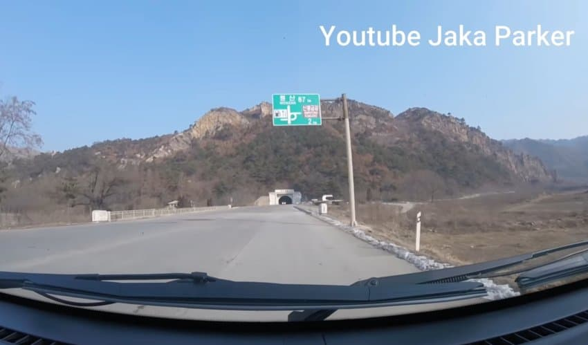
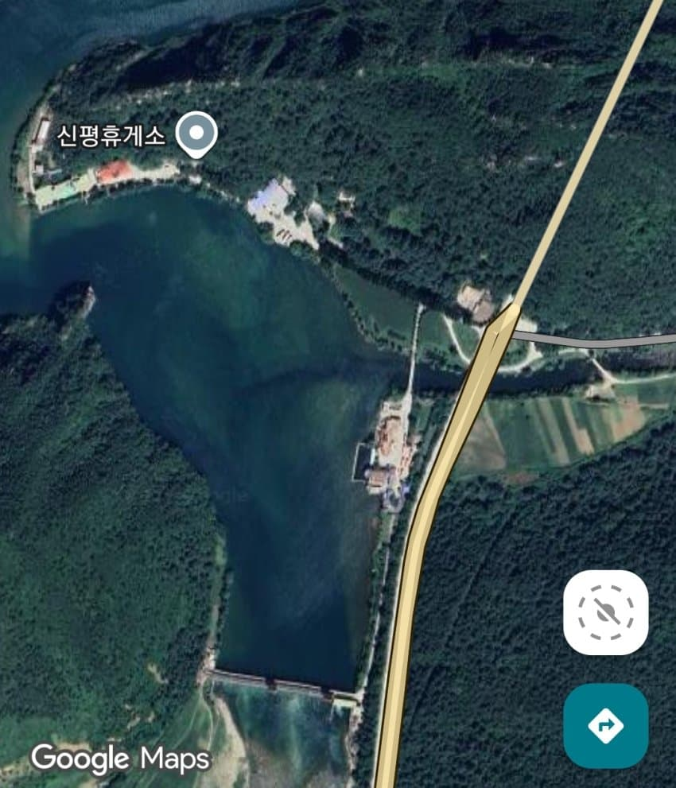
여기서 찍힌것
휴게소에서 놀다가라고 아예 진입로를 길게 뚫어놓음
근데 고속도로인데 터널앞에 진입로를 뚫어놓음
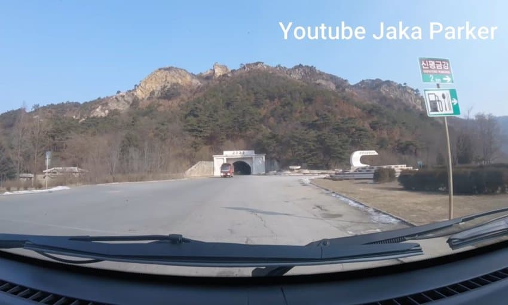
그냥 눈치껏 우회전해서 들어가면 됨
그나저나 4차선도로에 박힌 2차선 터널을 보라
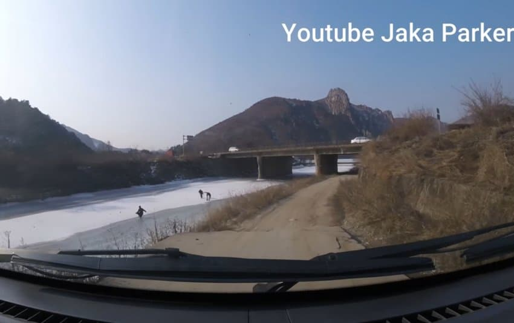
굽이굽이 계곡 너머 할머니집가는거 아님
고속도로 휴게소 가는거임
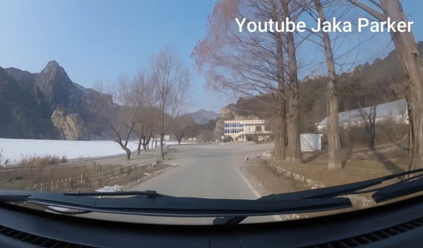
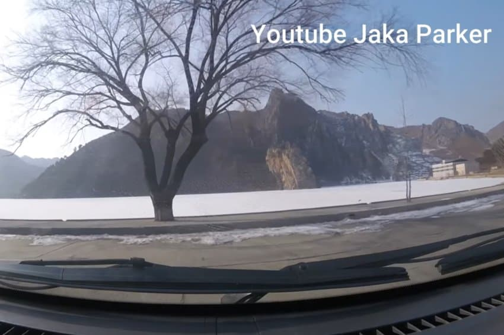
경치는 개지림
여기 휴게소 박아놓은 혹부리의 큰그림
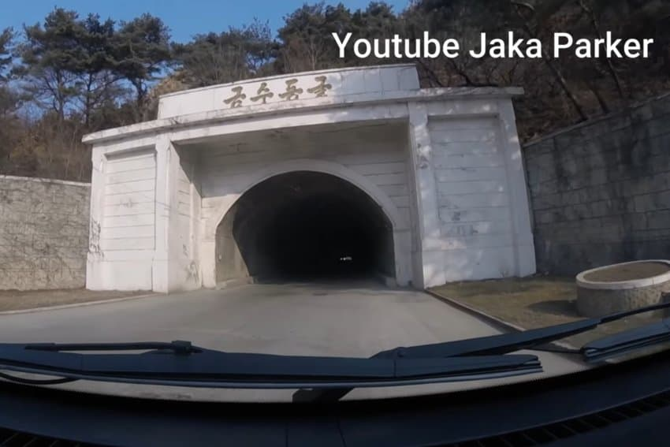
그럼 다시 터널로 가보자
채고지도자가 축생이라서 금수라고 박아놓은 네이밍센스
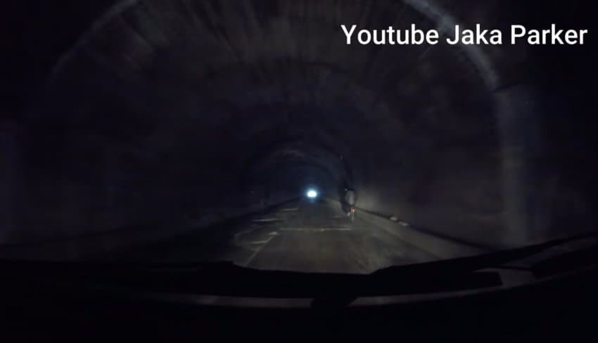
터널 내부다
진짜 굴이다
옆에 자전거도 다니는데 라이트 없으면 린민 하나정도 치고가는건 일도 아니다
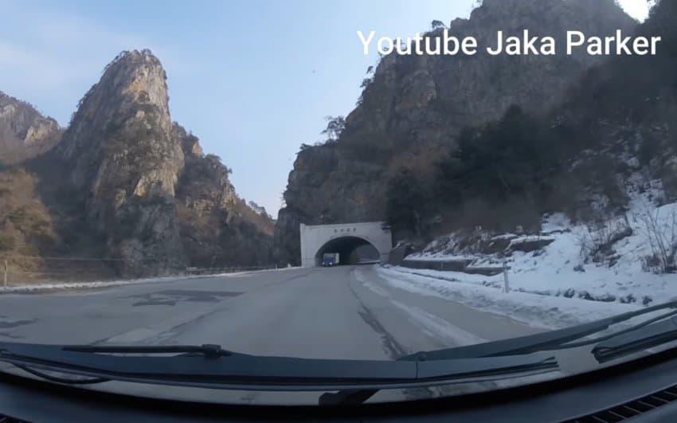
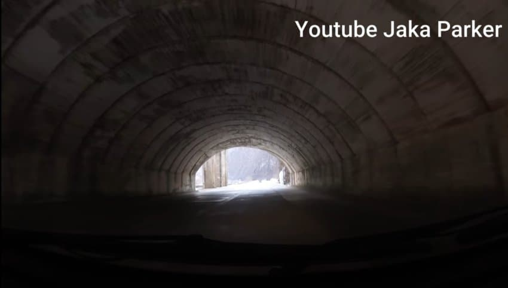
북쪽지방이라 경치하나는 기가 막힌데 터널 ㅅㅂ
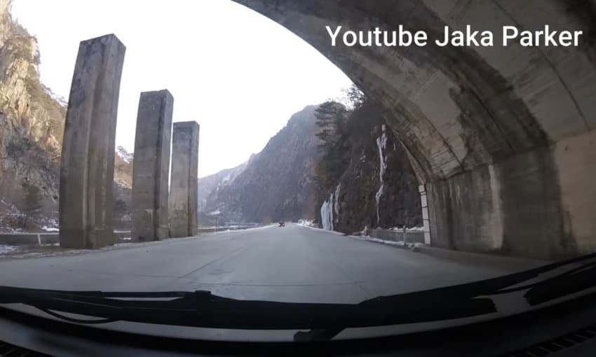
대전차 장애물이 보인다
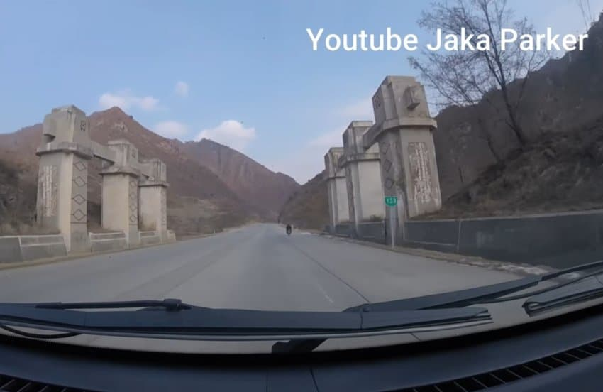
군데군데 박아놨다
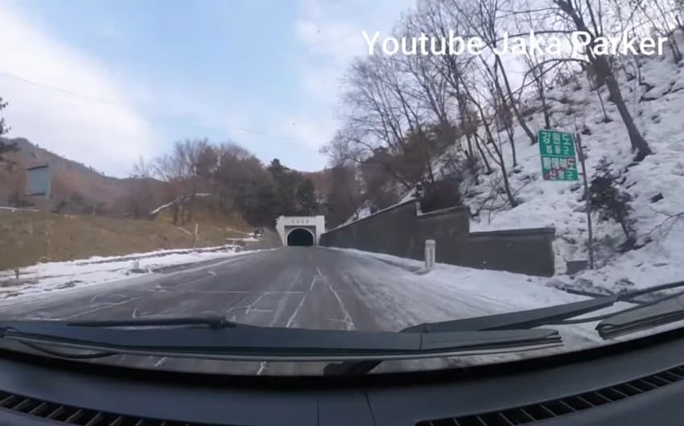
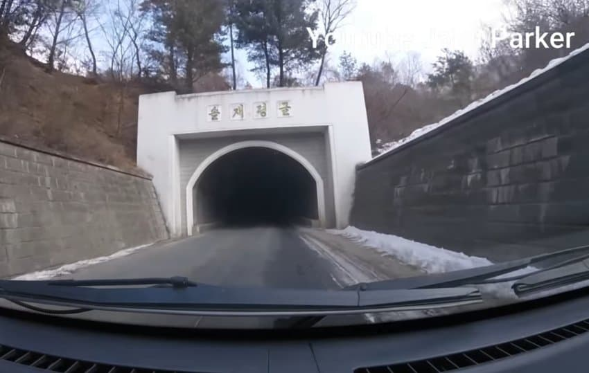
강원도와 황해도 경계 솔재령터널
이새끼들 뚫기 쉬운 짧은 터널은 넓게, 빡센 긴터널은 좁게 지어놓았다
무저갱 갱도 아니다 고속도로 터널이다
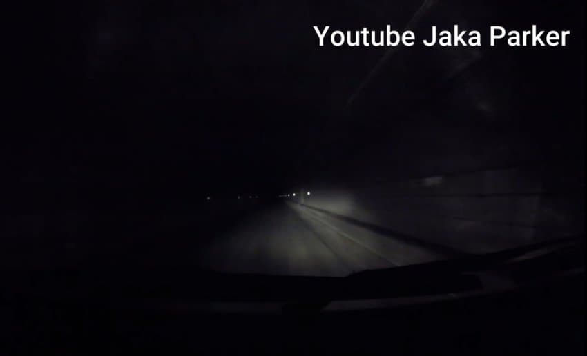
아오지 아니다 고속도로 터널이다
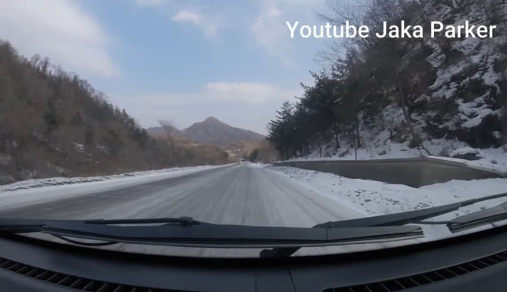
재설따윈 없다 알아서 다니도록
그나저나 생각보다 꼴에 고속도로라고 급경사는 없다
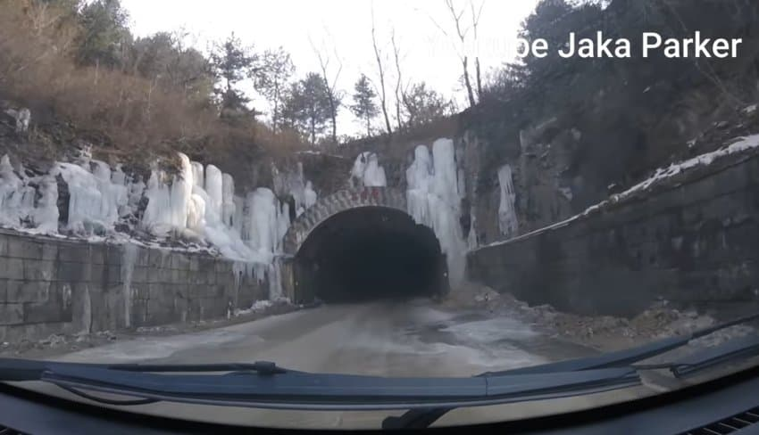
얼음골 동굴나라 ㅅㅌㅊ
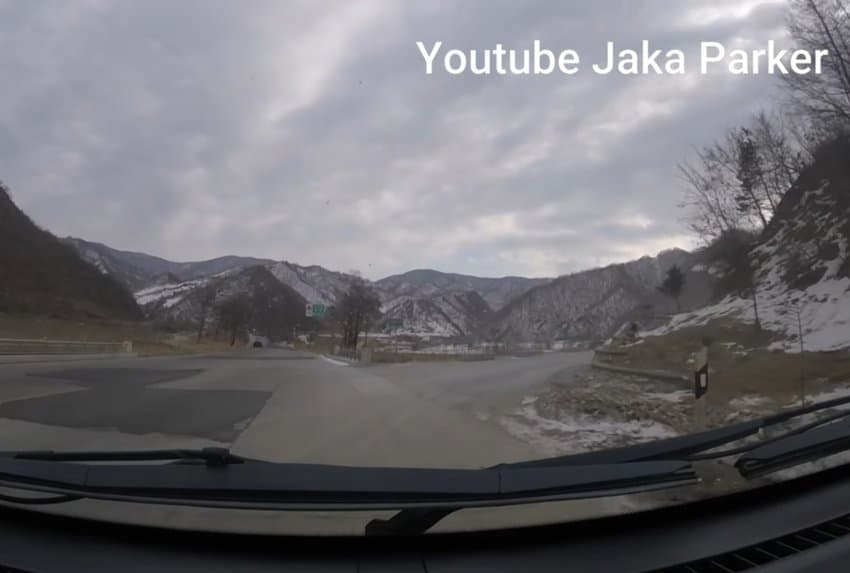
북한이 자랑하는 대 마식령스키장 톨게이트다
관광객 감시하는 지도원도 지쳐서 마식령이다왔다 하고 한숨쉬더라
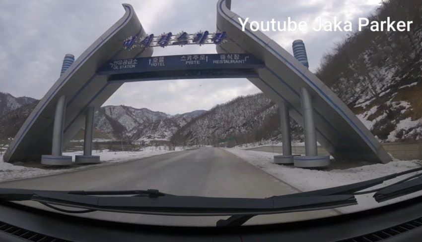
마식령 스키장 입구 보여주며 고속도로 여행 종료
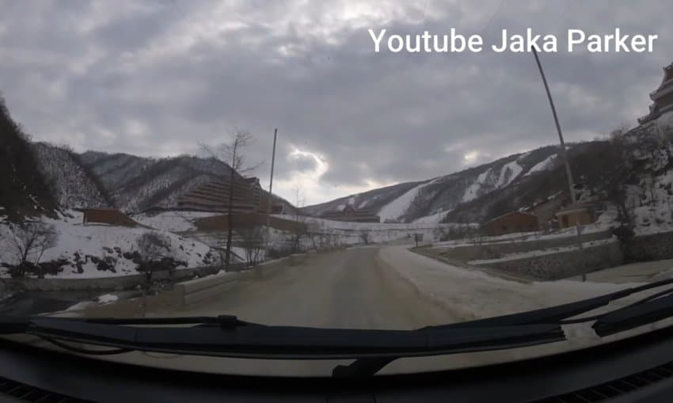

2분 8초에 지도원 전화통화있는데
급하다고 시속 100으로 밟자고 한다
그래도 고속공로라고 커브가 적으니 밟긴 좋은듯
예전에 고난의 행군시기
원산에서 명태 공수해서 평양으로 달리던 최고인민회의 의원이
터널 가로막은 군인도적떼한테 털렸다고 했는데
실제로 보니 삽가능해보인다
댓글
수집 당시 댓글 57개
제국치킨감찰총감겸제국사골곰탕대총장 · 11.09 21:02:44
ㅇㅇ · 11.09 21:04:40
ㅇㅇ · 11.09 21:05:33
ㅇㅇ · 11.09 21:09:17
· Garmin · 11.09 21:09:58
ㅇㅇ · 11.09 21:37:16
· DD · 11.09 21:54:25
· 1243-2 · 11.10 07:21:09
· ㅇㅇ · 11.12 11:32:54
ㅇㅇ · 11.09 21:37:28
ㅇㅇ · 11.10 03:21:01
· ㅇㅇ · 11.12 13:01:59
ㅇㅇ · 11.10 05:27:28
모닝테리아 · 11.10 09:28:02
ㅇㅇ · 11.10 10:24:52
봄은오는가 · 11.10 22:43:10
· ㅇㅇ · 11.11 04:23:16
세르반테스 · 11.11 00:35:41
땨뗘(봇) · 11.12 00:30:05
ㅋㅋ · 11.12 00:31:10
· ㅇㅇ · 11.12 01:26:37
MR4오너 · 11.12 00:35:30
ㅇㅇ · 11.12 00:35:45
ㅇㅇ · 11.12 00:39:03
· 슈밤베르크 · 11.12 00:40:09
· ㅇㅇ · 11.12 00:47:59
· つついあやめのおっと · 11.12 00:57:59
ㅇㅇ · 11.12 00:45:07
· ㅇㅇ · 11.12 00:48:55
· ㅇㅇ · 11.12 01:42:28
· ㅇㅇ · 11.12 09:40:40
· ㅇㅇ · 11.12 09:59:26
· ㅇㅇ · 11.12 14:51:13
ㅇㅇ · 11.12 00:58:18
· 야쿠자2세 · 11.12 01:20:28
ㅇㅇ · 11.12 01:26:43
· ㅋㅋ · 11.12 01:53:28
VWVWV · 11.12 01:37:38
따릉이^^ · 11.12 02:49:11
음붕이 · 11.12 03:28:16
ㅇㅇ · 11.12 03:42:43
ㅇㅇ · 11.12 04:38:42
ㅇㅇ · 11.12 05:38:32
ㅇㅇ · 11.12 07:16:28
· ㅇㅇ · 11.12 07:16:37
· ㅇㅇ · 11.12 07:17:33
· ㅇㅇ · 11.12 08:40:14
· ㅇㅇ · 11.12 14:50:32
ㅇㅇ · 11.12 08:17:00
원또 · 11.12 09:01:43
좃구녕 · 11.12 09:26:37
방사거북 · 11.12 10:33:41
ㅇㅇ · 11.12 11:36:40
ㅇㅇ · 11.12 11:37:03
ㅇㅇ · 11.12 12:44:42
ㅁㅇㄻㄹ · 11.12 14:27:10
ㅇㅇ · 11.12 14:52:08